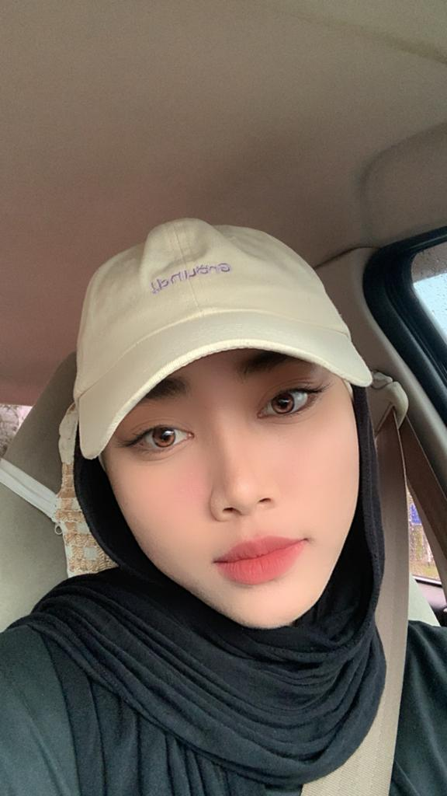
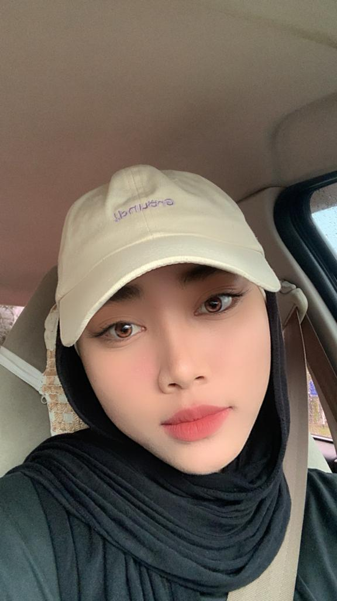

Assalamualaikum wbt, and greetings to Madam Seri Intan Idayu Shahrul Asari. This is the website by Nur Najihah Namisya Binti Johari, (2020604156) from N5IM1105A. Introduction to Web Content, with the code of IMD311, is one of the subject that I look forward to.
I consider myself to be a diligent student, yet I find it difficult to make a lot of acquaintances. Although I really enjoy talking with everyone, I tend to come across as an introverted person. Occasionally, I actually prefer to be alone myself most of the time. I enjoy shooting photos, thus I have a tonne of self-portraits
I have been developing my leadership skills ever since I was in school, therefore I firmly believe that it is one of my biggest strengths. I appreciate being a member of teams and organisations, so it has been a pleasure for me to help the institution by taking part in a lot of volunteer work. I can't wait to see how this kind of self-development strategy will work for me.
I am hoping to graduate with honours for the time being and find some downtime until I resume my studies. After years of enduring a stressful journey during my academic year, I believe it is equally crucial for both my mental and physical health to remain on the proper track.
 
